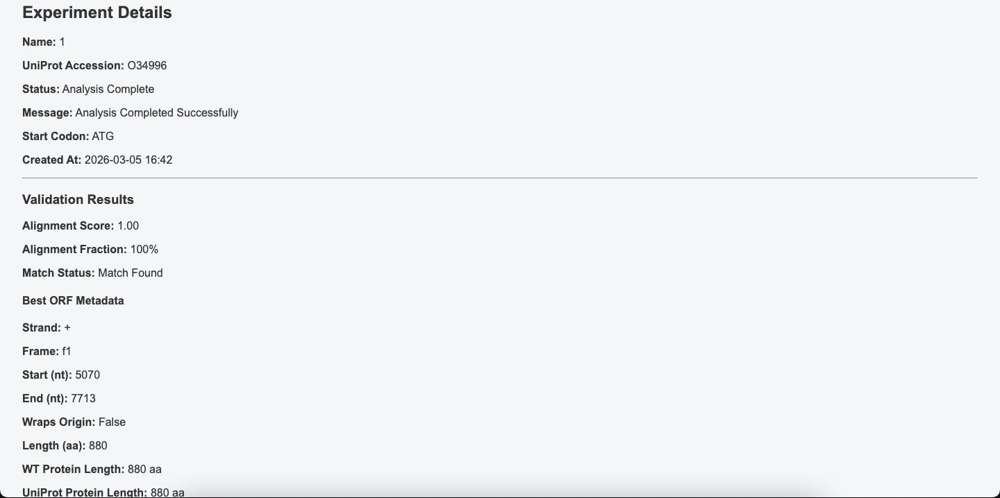

Understanding Validation Results
After staging, the portal displays the validation status, match or no match, in the Experimental Details section:
Match or No Match Status
| Status | Message | What it means |
|---|---|---|
| Match Found | Validation successful, move on to data upload and analysis | The plasmid ORF has been successfully matched to the UniProt reference protein — you can now upload your experimental data |
| No Match Found | No suitable match found, double-check your FASTA file and UniProt accession | The staging pipeline could not match any ORF to the reference protein — verify your inputs and try again |
More detailed information about the staging results are displayed underneath in the Validation Results section:
Validation Results

| Field | Description |
|---|---|
| Best ORF Start Position | The nucleotide position within the plasmid where the best-matching ORF begins |
| Alignment Score | The score fraction (0–1) reflecting how closely the best candidate ORF matches the UniProt reference protein. A score ≥ 0.85 is required for successful staging |
| WT Protein Length | The amino acid length of the best-matched ORF translated sequence |
| UniProt Protein Length | The amino acid length of the reference protein retrieved from UniProt |
Tip
The WT Protein Length and UniProt Protein Length should be similar if the correct ORF has been identified. A large difference may indicate that the wrong plasmid or accession ID was provided.
Extracted Key Domains
The portal also displays a table of key functional domains extracted from the UniProt record for your target protein. These annotations are retrieved automatically during staging alongside the reference protein sequence from UniProt.
| Column | Description |
|---|---|
| Type | The type of annotated feature — all entries shown here are Domain annotations |
| Description | The name of the functional domain (e.g. 5'-3' exonuclease, 3'-5' exonuclease) |
| Start Position | The amino acid position where the domain begins in the reference protein sequence |
| End Position | The amino acid position where the domain ends in the reference protein sequence |
This information is useful for interpreting mutation results — mutations that fall within a known functional domain are more likely to affect enzyme activity than those in non-annotated regions.
If Staging Returns a Match: Validation successful
If the validation result shows succesful match found, move on to the next step by clicking Upload Experimental Data at the bottom of the page to upload your TSV/JSON experimental data.

If Staging Returns No Match Found: Validation unsuccessful
If the experiment status shows No Match Found, this means the portal was unable to find a candidate ORF within the uploaded plasmid that sufficiently matches the UniProt reference protein.
How the Match Threshold Works
The portal compares each candidate ORF against the UniProt reference protein using a similarity score. A match is only accepted if the alignment score reaches a minimum threshold of 0.85 out of 1.0. This threshold is designed to:
- Allow for moderate sequence differences between the plasmid construct and the reference protein, such as mutations or small insertions and deletions
- Reject ORFs that are unrelated to the target protein
- Reduce false positives from large random ORFs that may partially align by chance
If no candidate ORF reaches this threshold, the experiment status is set to No Match Found and staging cannot proceed.
What to Check
If you receive a No Match Found status, verify the following before re-attempting staging:
| Check | Action |
|---|---|
| Incorrect UniProt accession ID | Confirm the accession ID matches your target protein on the UniProt website (uniprot.org) |
| Wrong plasmid FASTA uploaded | Verify the uploaded FASTA file contains the correct plasmid sequence encoding your target gene |
| Mismatched start codon | If your gene uses GTG or TTG and only ATG was selected, try enabling all three start codons |
| Highly divergent sequence | If the plasmid encodes a heavily engineered variant, the sequence similarity may fall below the threshold even with correct inputs |
If you have verified all of the above and staging continues to fail, refer to the Troubleshooting Guide for further steps.